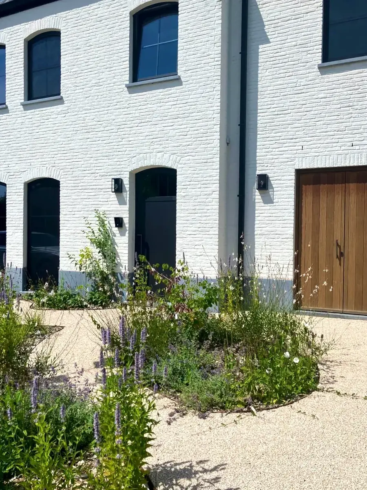
01
Advies en tuinontwerp
Een ontwerp van nul, of een borderplan voor je bestaande tuin. We komen vrijblijvend langs om te kijken en te luisteren.
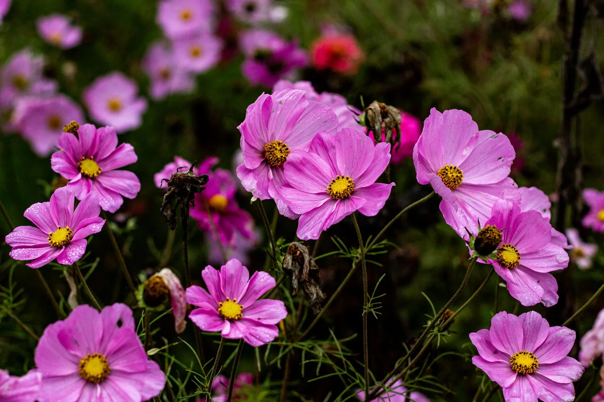
We ontwerpen en leggen tuinen aan waar bijen, vlinders en regenwater hun plek krijgen. Wild genoeg voor de natuur, mooi genoeg om elke dag van te genieten.
Een tuin vol 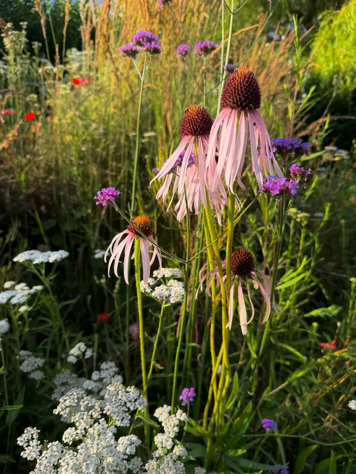 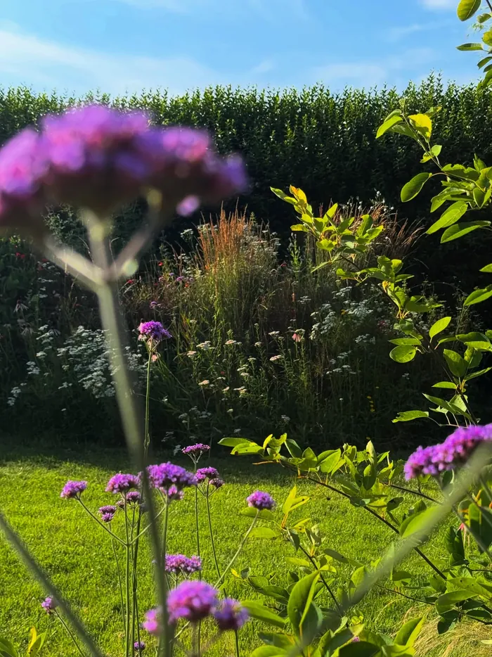 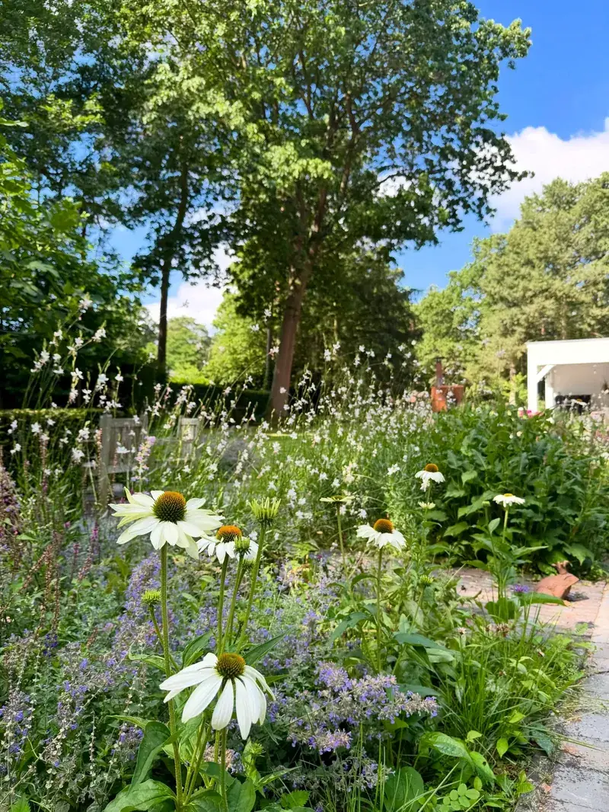
Een groot grasveld vraagt veel onderhoud en geeft weinig terug. Wij kiezen liever voor gelaagdheid: vaste planten, struiken, klimplanten en bomen. Elk seizoen anders, en elk jaar een beetje mooier.
Valerie tekent je tuin, Matthias en zijn ploeg leggen hem aan. Van een borderplan voor je voortuin tot een volledige tuin met poel.

Een ontwerp van nul, of een borderplan voor je bestaande tuin. We komen vrijblijvend langs om te kijken en te luisteren.
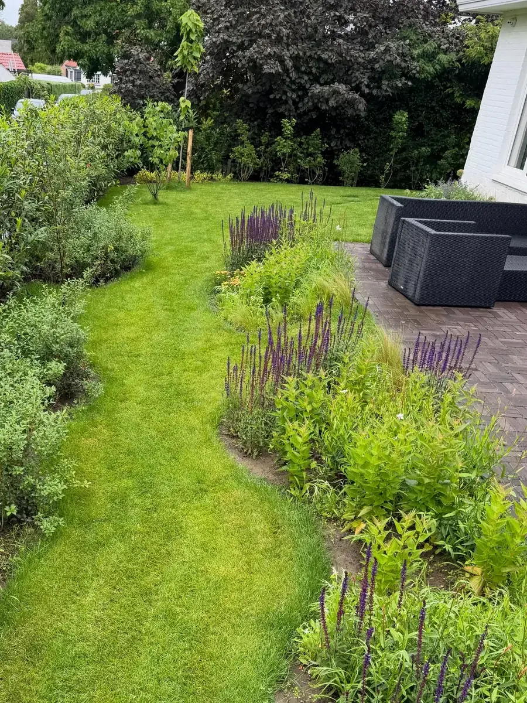
Vaste planten, ingezaaide bloemen en plekken waar water mag blijven staan.
Het geheim zit onder de stenen. Zo bouwen we hem op:
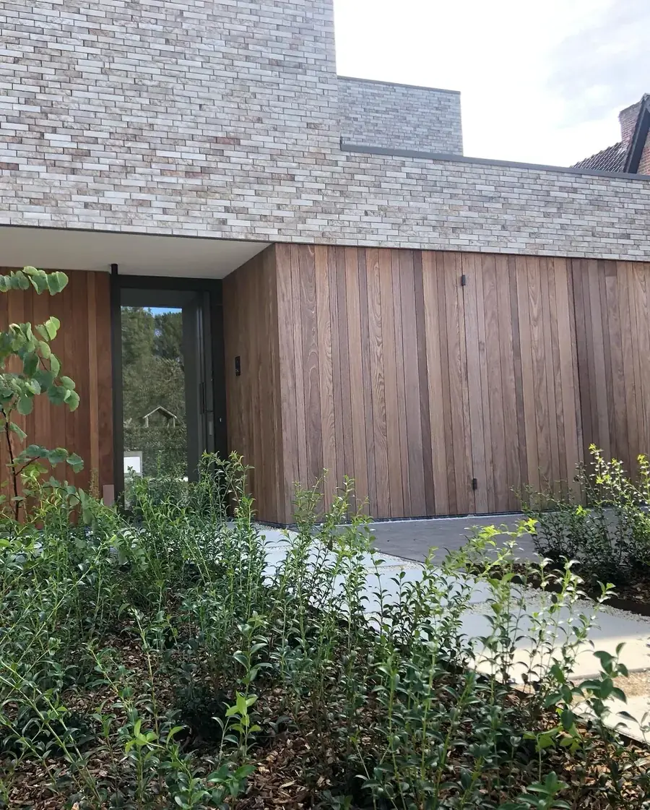
Grondwerk, beplanting en later het onderhoud met kennis van zaken. Zo blijft je tuin groeien zoals bedoeld.
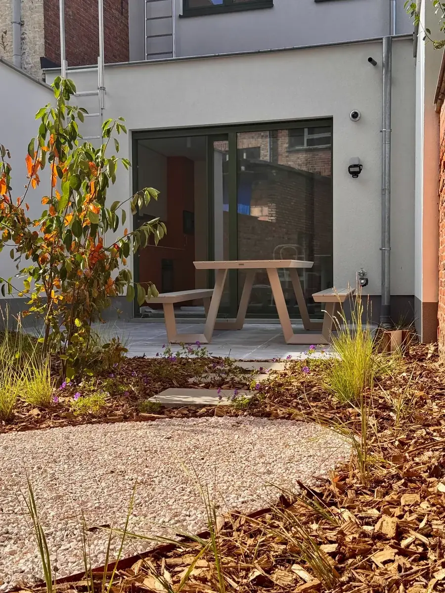
LeuvenEen stadstuin bij een gerenoveerd studentenpand, samen met Inclusief Architecten.
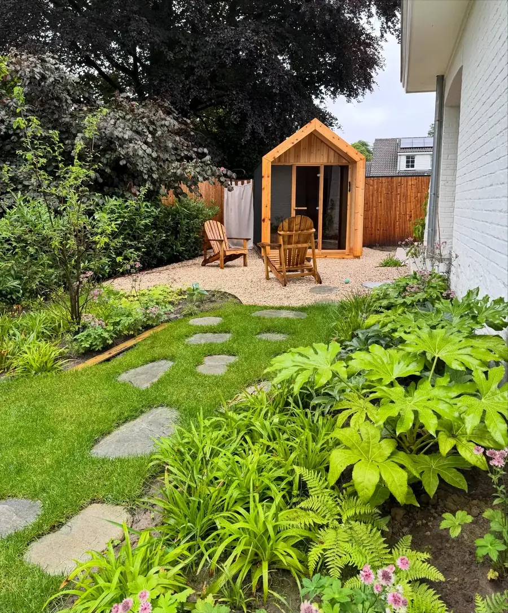
HeverleeSauna, vuurschaal en veel groen aan de schaduwzijde van het huis.
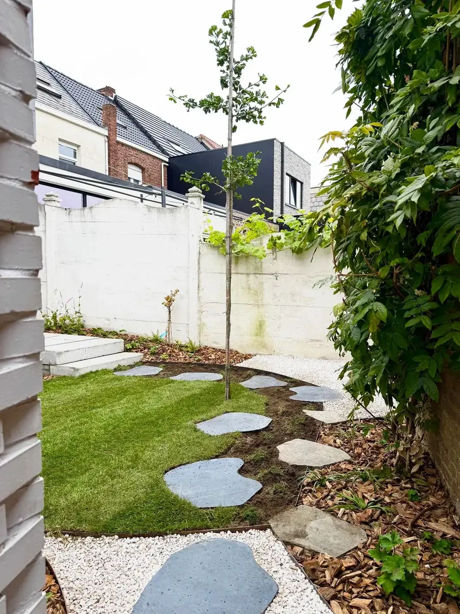
MechelenMeer groen, gelaagdheid en organische lijnen voor een kleine stadstuin.
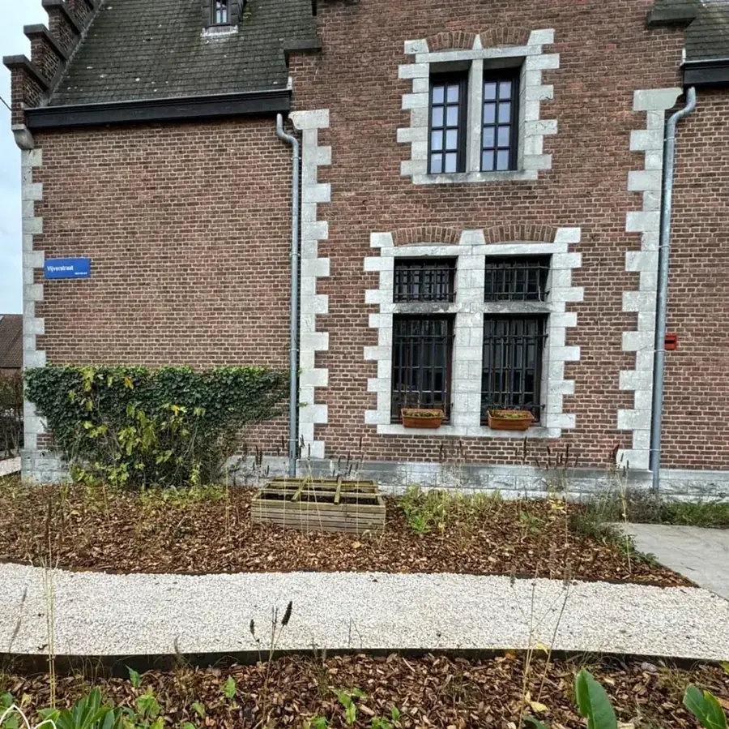
MechelenVan verwilderd onkruid naar bloemrijke borders en een waterdoorlatend pad.
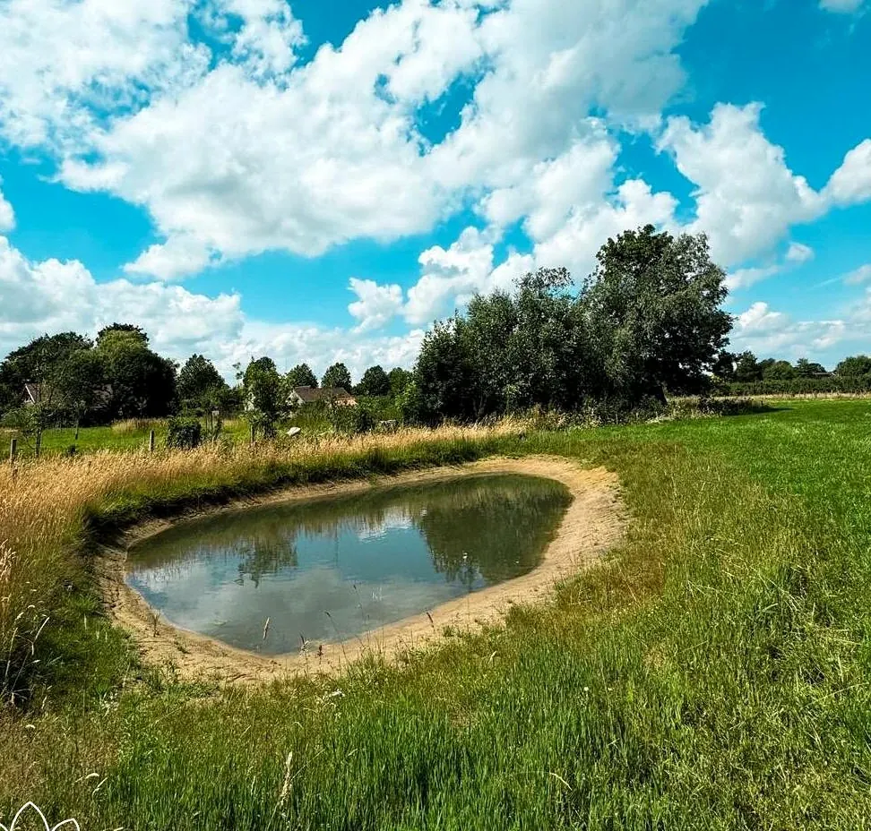
HansbekeMet Regionaal Landschap Meetjesland, plus een houtkant met inheemse soorten.
Nieuwe borders, werven en bloeiers op @cosmosgardens.be.
Zeer duidelijke communicatie en absoluut een aanrader! Als je twijfelt: gewoon doen. De offerte was superduidelijk en de gemaakte afspraken werden perfect nageleefd. En het resultaat? Gewoon écht prachtig!
Wij hebben 22 are tuin en we hadden behoorlijk wat stormschade en ontwortelde bomen. Matthias en zijn team hebben die klus heel professioneel aangepakt. Wij waren zo tevreden dat we besloten om toekomstige tuinwerken en klussen aan hun toe te vertrouwen.
Wat een fijne samenwerking met Cosmos Gardens! Vanaf het eerste gesprek tot de uitwerking viel hun professionaliteit, meedenkende aanpak en indrukwekkende vakkennis meteen op. Ik was erg onder de indruk van de prachtige tuinontwerpen door Valerie.
We komen graag vrijblijvend langs om je tuin te bekijken, te luisteren naar wat je wil en daarna een duidelijke offerte op te maken. Voor ontwerp, aanleg of onderhoud.
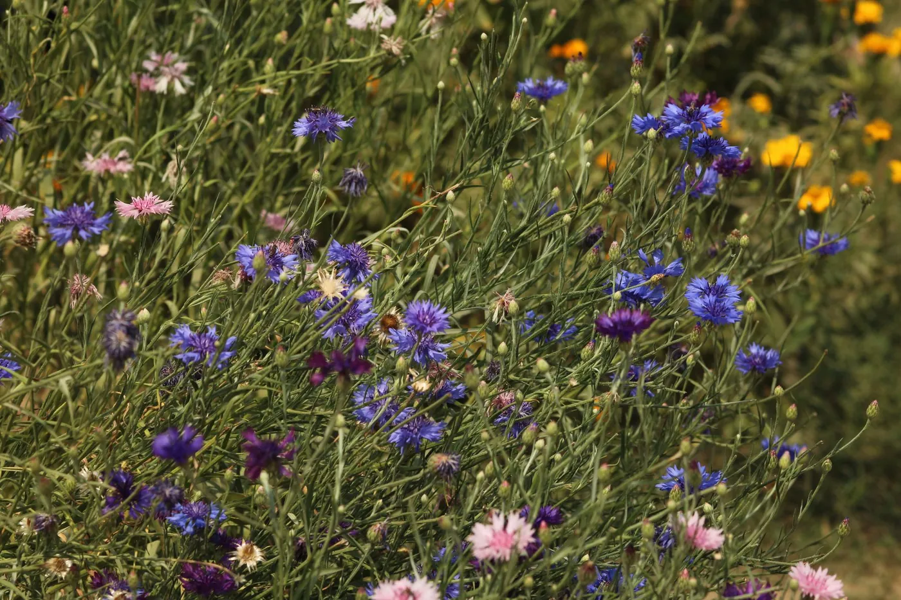
Bring nature homeIk maakte deze demo voor jullie om te tonen wat er kan. Na een kort gesprek maak ik er iets veel persoonlijkers van, helemaal naar jullie wens.
Vrijblijvend. Ik kom langs of we bellen.
Op maat, op jullie eigen domein.
Geen voorschot. Jullie betalen pas als alles klaar is.
Hosting, domeinnaam en kleine wijzigingen, zoals nieuwe openingsuren.
Omdat een voorbeeld meer zegt dan een mail. Zo zien jullie meteen wat er kan, en het kost jullie niets.
Nee. Het gesprek is vrijblijvend. Vinden jullie het niks, dan is het daarmee gedaan.
Na ons gesprek staat jullie site binnen 10 tot 14 dagen online.
Zeker. Jullie domeinnaam kan gewoon blijven, de nieuwe site komt in de plaats van de oude.
Nee, dat doe ik op basis van ons gesprek. Eigen foto's zijn mooi meegenomen, maar niet nodig om te starten.